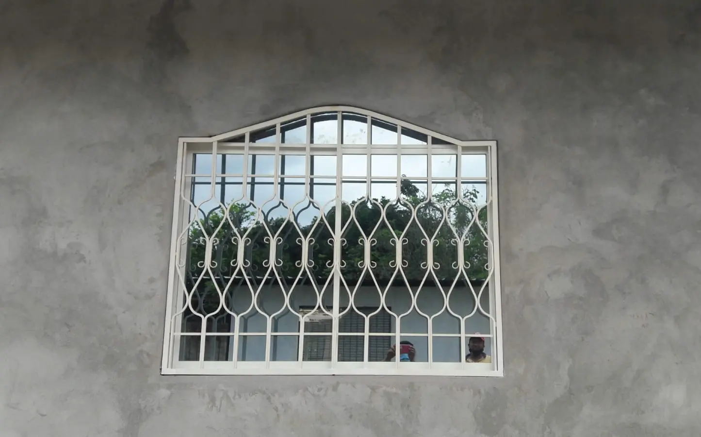
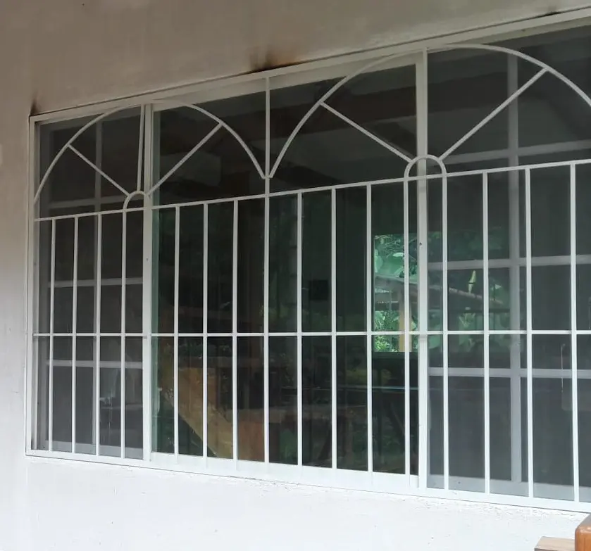
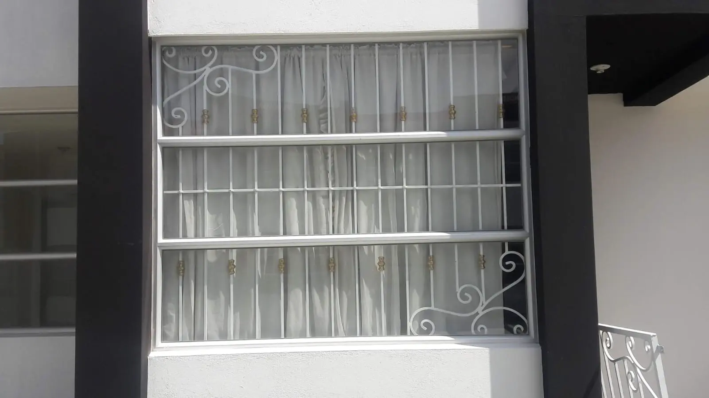
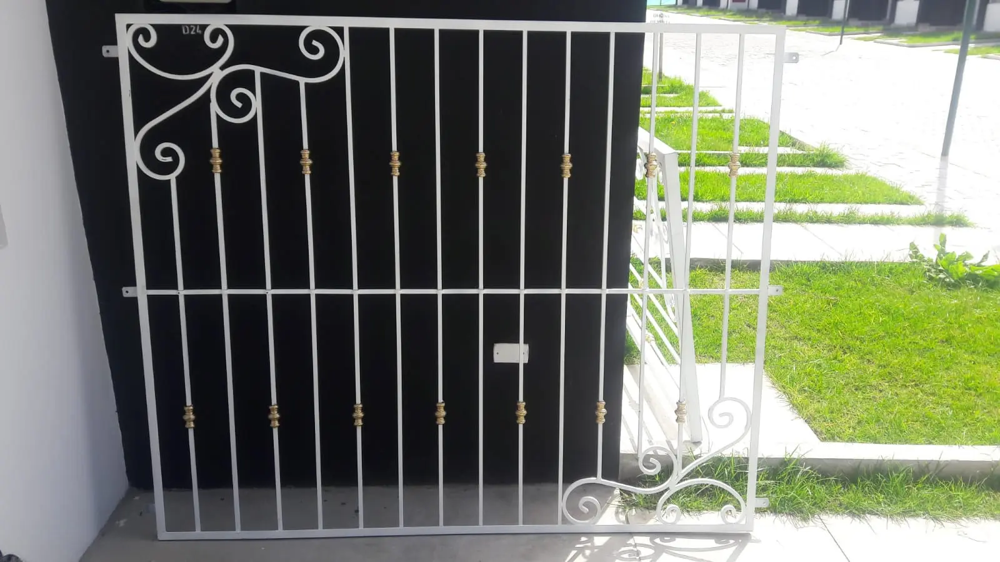
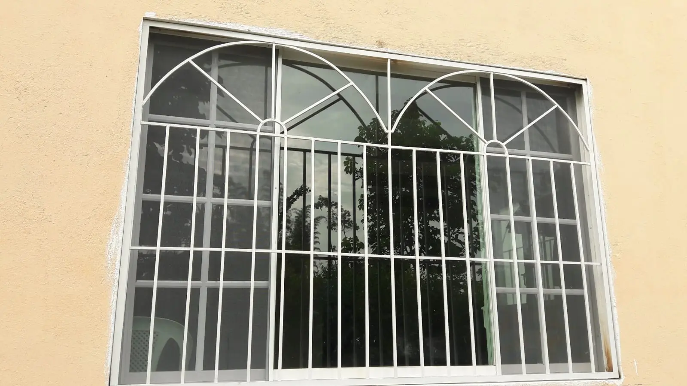
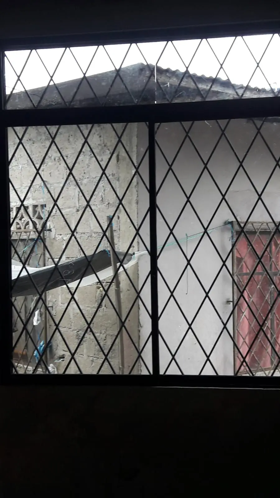
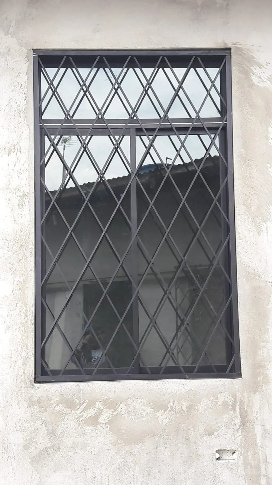
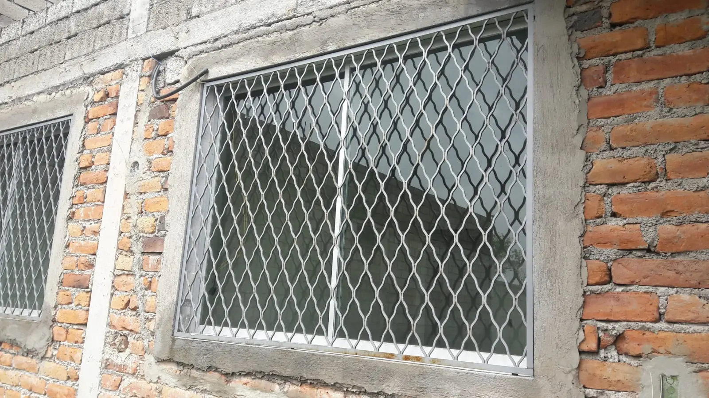
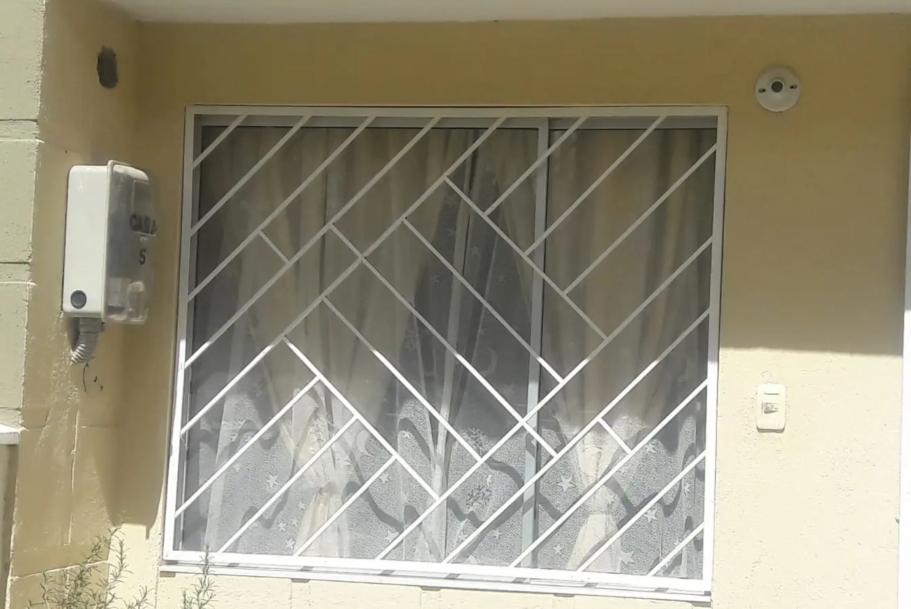
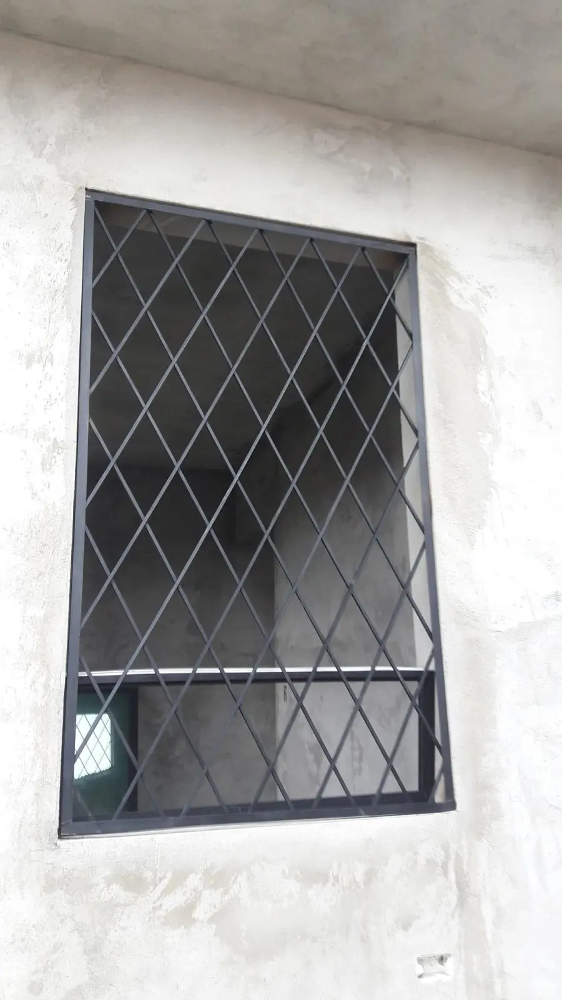

Cubreventanas, Protectores y Rejas de Ventana en Quito
Fabricamos e instalamos cubreventanas, protectores y rejas de ventana en Quito, en hierro y fierro con pintura anticorrosiva y electrostática. Dan seguridad a la ventana que ya tienes sin cambiarla, con diseños que se integran a la fachada en vez de parecer una reja.
Todo se fabrica a medida del vano, para viviendas, locales comerciales y edificios. Medimos en obra sin costo y con esa medida te damos el precio exacto.
Modelos y precios de cubreventanas

$55
Cubre-ventana con arco y volutas · Ref. N2

$55
Protector de ventana con arcos · Ref. N3

$55
Cubre-ventana de barrotes y volutas · Ref. N5

$55
Cubre-ventana con volutas · Ref. N6

$55
Protectores de ventana con arcos · Ref. N7

$55
Cubre-ventana de rombos, blanco · Ref. N9

$55
Cubre-ventana de rombos, negro · Ref. N10

$55
Cubre-ventana de rombos · Ref. N11

$55
Cubre-ventana de rombos, gran formato · Ref. N12

$55
Cubre-ventana de rombos, ventana estrecha · Ref. N13
Los precios de arriba son de referencia por modelo, desde $55. Lo que mueve el presupuesto final es el tamaño de la ventana, el diseño elegido y cuántas protecciones se fabrican en el mismo trabajo. Medimos en obra sin costo y con esa medida te damos el precio exacto.
Cubreventanas y protectores de ventana en hierro
Las cubreventanas de hierro son la forma más común y económica de proteger una ventana en Quito sin cambiarla. Se fabrican a medida del vano y se instalan por fuera, con acabado en pintura anticorrosiva y electrostática para aguantar el sol y la lluvia. Hay diseños fijos de barrotes verticales, de rombos y con arco superior y volutas; también protectores tipo jaula que sobresalen del vano para ganar espacio interior.
Cómo proteger la ventana sin que parezca una reja
El miedo de mucha gente es que la casa quede con pinta de cárcel. Por eso los modelos con arco y volutas, o los de rombos, son los más pedidos para vivienda: cumplen como protección pero se leen como parte de la fachada. Se pintan del color de la ventana o de la pared para que integren en lugar de resaltar.
¿Necesitas cambiar la ventana entera?
Nuestra especialidad son las protecciones en hierro y fierro, que se instalan sobre la ventana que ya tienes. Si lo que buscas es reemplazar la ventana completa —el marco y el vidrio corredizo—, ese trabajo va en aluminio; coméntalo en la visita de medición y te asesoramos según el ambiente.
Mantenimiento de ventanas y cubreventanas
Reparamos y damos mantenimiento a ventanas y cubreventanas existentes, sean nuestras o no: lijado y repintado, cambio de bisagras, ajuste de marcos y refuerzo de anclajes. Si tu protección está oxidada o floja, la revisamos y te decimos si conviene recuperarla o reemplazarla.
Cómo trabajamos: medición, fabricación e instalación
Vamos a tu casa o al local y medimos cada vano sin costo, antes de fabricar nada. Con esas medidas armamos la cubreventana o la ventana a la medida exacta y la instalamos con el anclaje que corresponde según el tipo de pared. Con 22 años de oficio y taller propio en Quito, el mismo taller que fabrica es el que instala y el que responde después.
Zona de servicio
Trabajamos en Quito y en los valles: Cumbayá, Tumbaco, Calderón, Sangolquí y Nayón.
Preguntas frecuentes
¿Cómo se llama lo que cubre las ventanas?
En Ecuador se le dice cubreventana o cubre ventana, protector de ventana o reja de ventana. Es la estructura metálica que se coloca por fuera de la ventana para dar seguridad sin cambiar la ventana existente. Las fabricamos en hierro y fierro, a medida del vano.
¿Cuánto cuestan las protecciones de fierro para ventanas?
Los modelos del catálogo de esta página parten desde $55. El precio final depende del tamaño de la ventana, el diseño y la cantidad de protecciones. Medimos en obra sin costo y con esa medida te damos el precio exacto.
¿Qué material puedo usar para cubrir las ventanas?
Lo más común en Quito es el hierro o fierro con pintura anticorrosiva y electrostática: resistente, económico y con muchos diseños. Se fabrica a medida del vano y se instala por fuera de la ventana que ya tienes. En la visita de medición vemos el diseño que mejor encaja con la fachada.
¿Cómo puedo proteger mis ventanas sin poner rejas a la vista?
Con cubreventanas de diseño decorativo: arcos, volutas o rombos que funcionan como protección pero se leen como parte de la fachada, no como una reja de cárcel. Se pintan del color de la ventana o de la pared para que integren.
¿Qué protecciones de ventana son sencillas y decorativas?
Los modelos con arco superior y volutas, y los de rombos, son los más pedidos para vivienda porque protegen y a la vez decoran. En el catálogo de esta página están fotografiados los diseños que fabricamos.
¿Qué tipos de rejas y protectores de ventana existen?
Cubreventanas fijas de barrotes verticales, de rombos, con arco superior y volutas, y protectores tipo jaula que sobresalen del vano para ganar espacio interior. Todas se fabrican a medida en hierro y se instalan sobre la ventana que ya tienes.
¿Hacen la ventana completa o solo la protección?
Nuestra especialidad son las cubreventanas y protectores en hierro y fierro, que se instalan sobre la ventana que ya tienes. Si necesitas reemplazar la ventana entera —el marco y el vidrio corredizo—, ese trabajo va en aluminio; coméntalo en la visita y te asesoramos.
¿Trabajan en Cumbayá, Tumbaco o los valles, o solo en Quito?
El taller está en Quito y el servicio cubre Quito y los valles: Cumbayá, Tumbaco, Calderón, Sangolquí y Nayón.
Otros servicios
Si además necesitas cambiar la puerta, mira puertas metálicas o puertas de garaje y portones. Para una reforma más amplia, remodelaciones. Escríbenos por contacto o directo por WhatsApp para cotizar tus cubreventanas o ventanas.